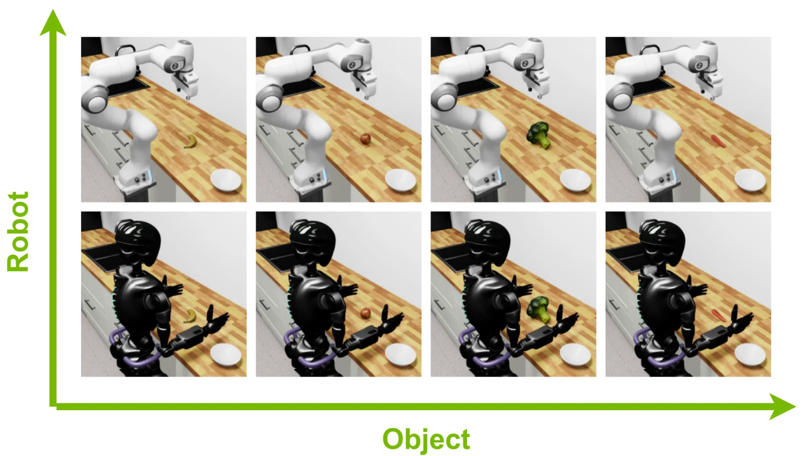
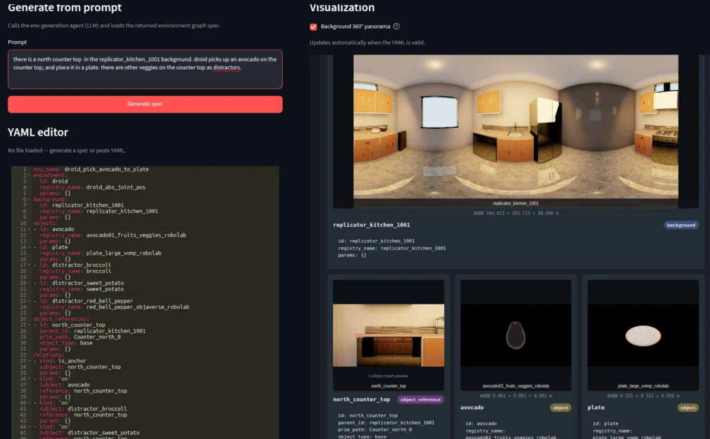
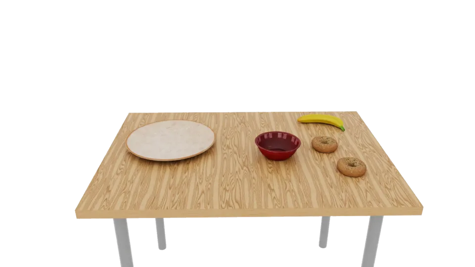
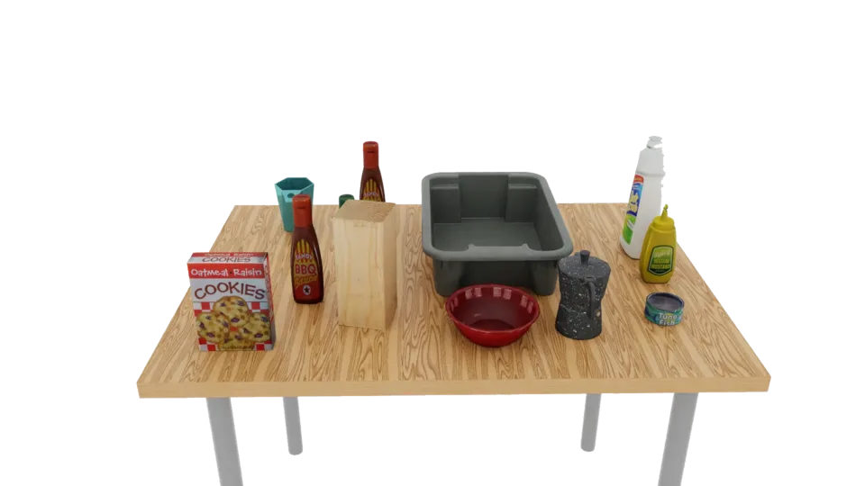
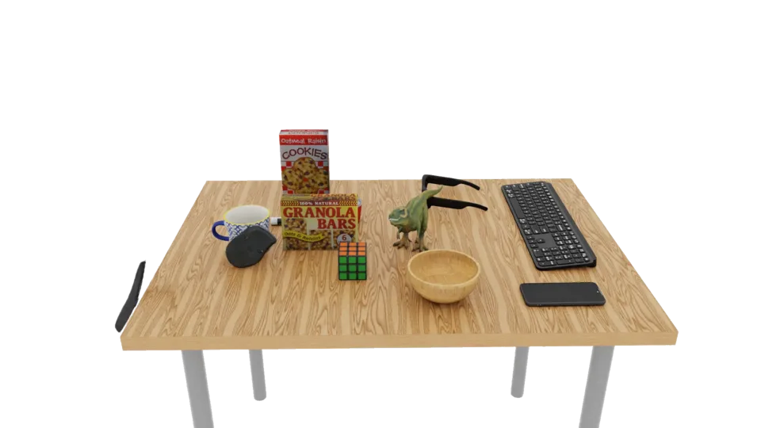
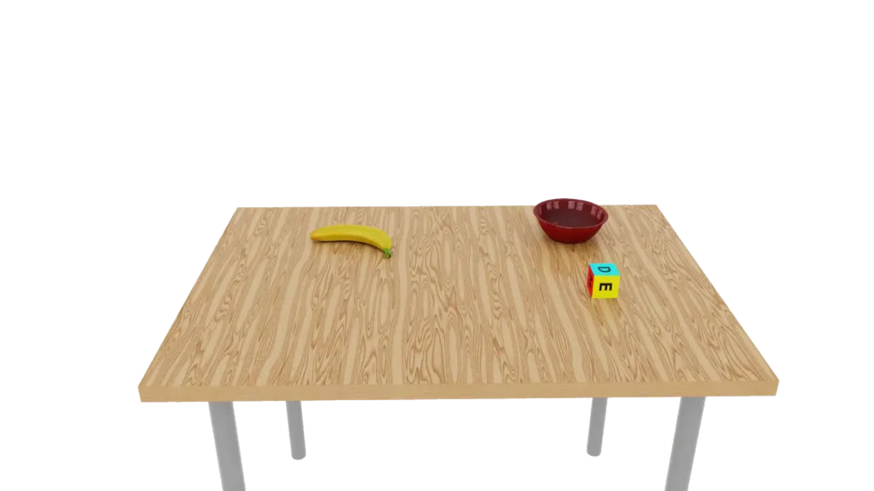
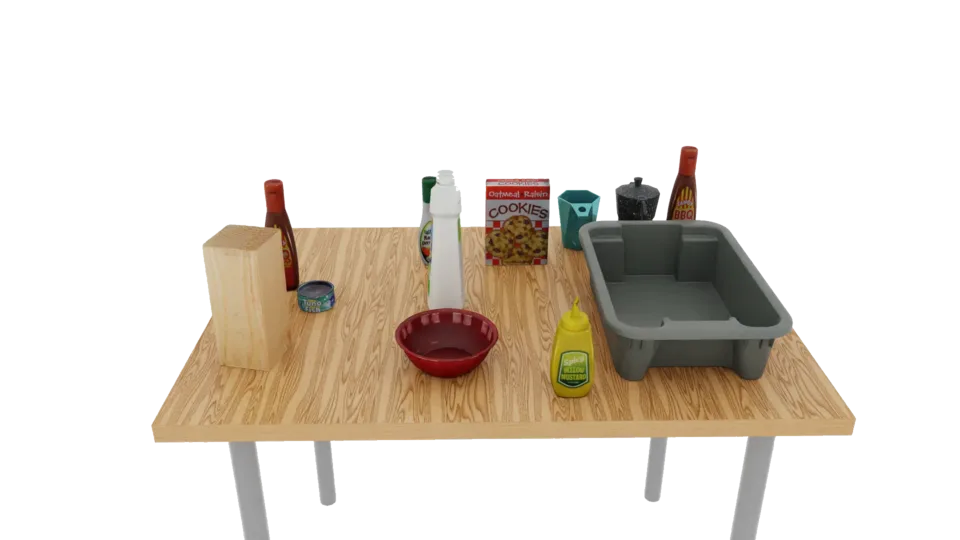
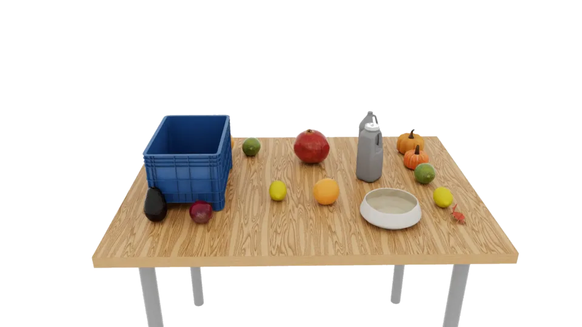
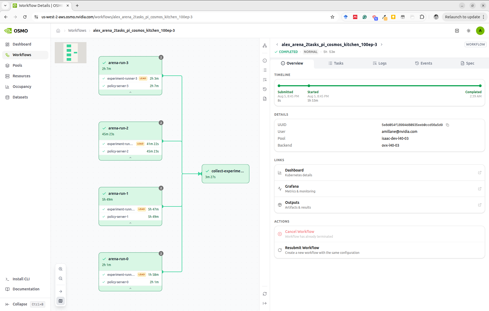

Welcome to Isaac Lab Arena!#
Isaac Lab Arena extends Isaac Lab to simplify the creation of simulation environments, and for running them fast.
Note
This is the development version of IsaacLab Arena. It contains the newest features but may not be fully tested yet. For the tested version, please refer to the release/0.2.1 branch.
{kind=link}

plate.add_relation(On(table))
banana.add_relation(On(plate))
bowl.add_relation(On(table))
bagel_1.add_relation(On(table))
bagel_2.add_relation(On(table))










{kind=link}


License#
This code is under an open-source license (Apache 2.0).
Acknowledgments#
NVIDIA Isaac Lab-Arena is an open-source framework, available on GitHub, that provides a collaborative system for large-scale robot policy evaluation and benchmarking in simulation, with the evaluation and task layers designed in close collaboration with Lightwheel.
Isaac Lab-Arena was built in collaboration with the authors of Robolab (website, paper).
Contributing#
For more details on how to contribute to Isaac Lab Arena, please refer to the Contributing Guidelines.
TABLE OF CONTENTS#
Set Up
Why is Isaac Lab Arena needed?
Getting Started
Arena in Your Repo
Example Workflows
Concepts
References